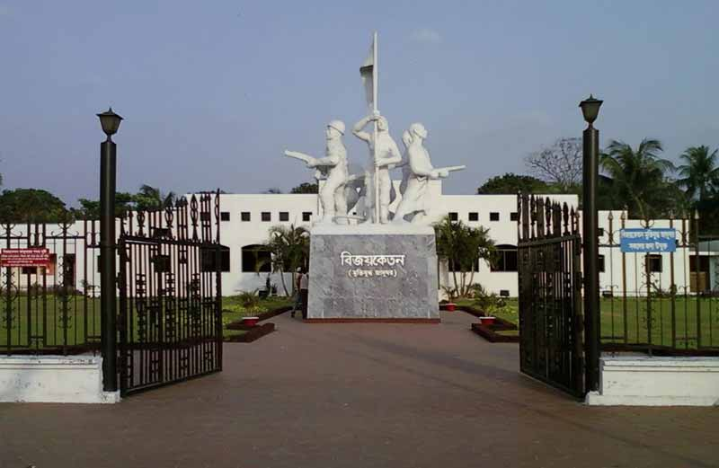
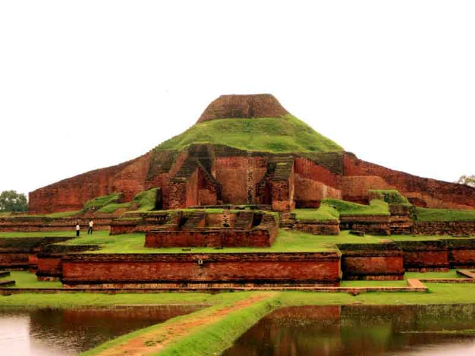
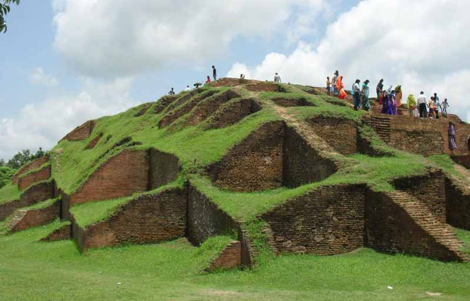
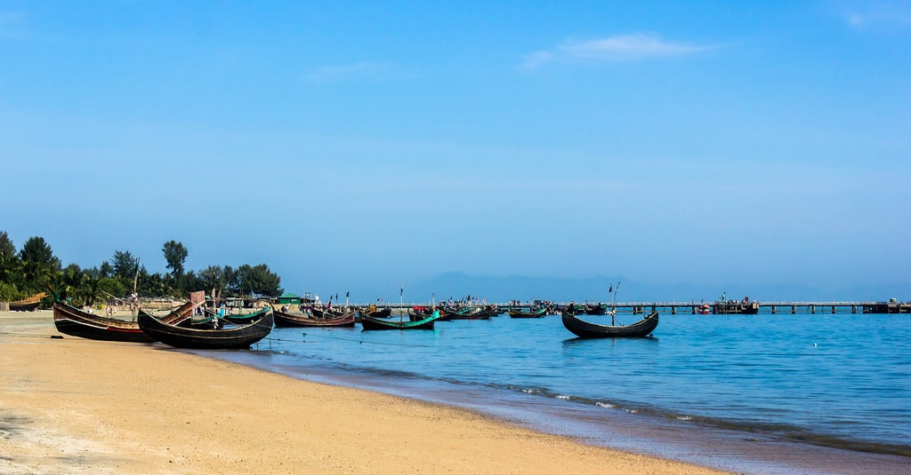
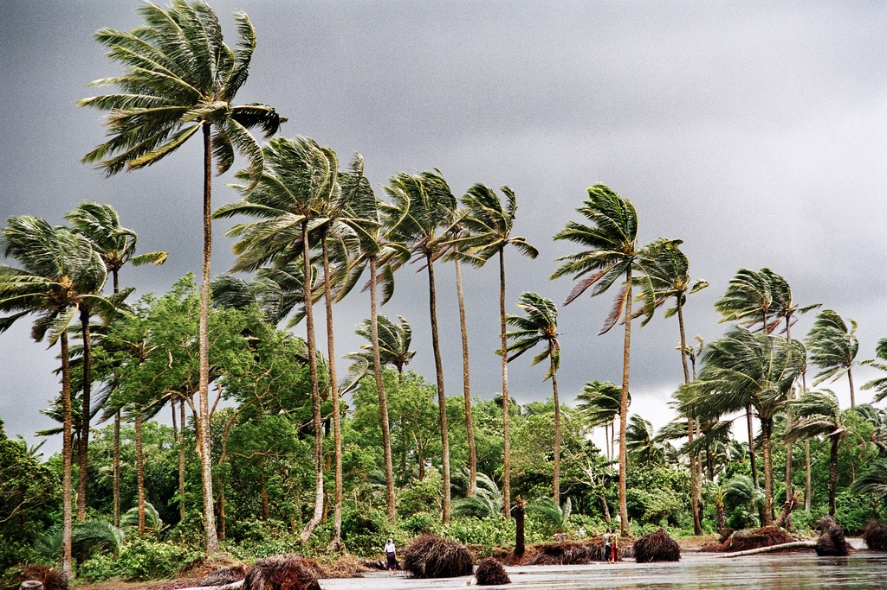
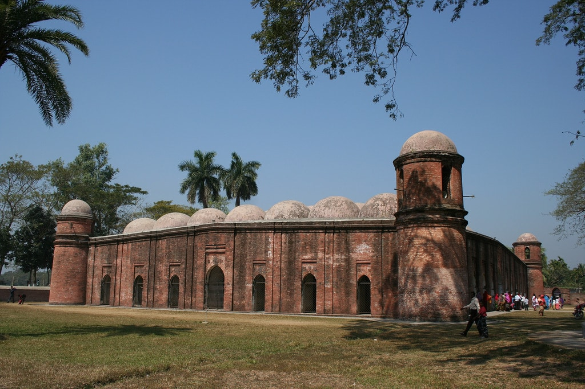

About Bangladesh
About Bangladesh
National flag of Bangladesh
History of National flag
1971 The War of Independence used the flag is determined on the basis of this flag, the red circle of the map was later moved to the flag, the map was dropped. The national flag of Bangladesh corresponds to the national flag of Japan , but the difference is that instead of greenhouses of Bangladesh, the Japanese use white. The red circle is slightly pressed on one side, when the flag flies, it should be seen in the middle of the flag.
On June 7 , 1970 , the students of Bangabandhu Sheikh Mujibur Rahman were to take part in a military parade in the Paltan Maidan of East Pakistan's capital Dhaka . For this purpose a ' Joy Bangla army' was organized with students , 'February 15 forces' were formed. The student leaders decided to build a flag of this force. To this end , 1970, on June 6, DU Sergeant Saheeh Hall (then Iqbal Hall), 116 (currently 117118) No. room BCL leader ASM Abdur Rab , Shahjahan Siraj , Kazi Aref Ahmed , Marshal Monirul Islam sat in a meeting with the plans of the flag. Chhatra League leader Swapan Kumar Chowdhury, Jagannath University (then Jagannath College) Nazrul Islam, general secretary of the district unit BCL, and central student leader Shivneri Das , general secretary of the university unit, Hasanul Haque Inu and student leader Yusuf Salahuddin Ahmed were present at the meeting.
At the end of the discussion, based on the initial proposal of Kazi Aref, the decision was taken to create a yellow-colored map of Bengal in the red sun on the green land. Kamrul Alam Khan (Khasru) then seized a circle of red in a big piece of green cloth from a Bihari garage shop in New Market; Then East Map of Pakistan marking on the tracing paper with map book from Enamul Haque of 312 of Qayed Azam Hall (now titumir hall) of Yusuf Salauddin Ahmed and Hasanul Huq Inu University of Engineering. Student leader Shivnarayan Das finally drew his map with red handed in red circle [3] [4] [5]
On March 2, 1971 , the first national flag was hoisted in the history of Bangladesh at Battala of Dhaka University . Abdur Rab . He was the Vice President of University of Dhaka University at that time . According to the CIA World Factbook [2] [7] green color of the country was used to mean the green nature of Bangladesh. [8]
Sheikh Mujibur Rahman hoisted the flag on March 23, at his residence on the eve of declaration of independence. Later, in 1972 , Sheikh Mujibur Rahman's government asked Patua Kamrul Hasan to give a report containing the size, color and interpretation of the flag, except for the map between the designs of Shivnarayan Das . The revised form of Kamrul Hasan is currently the national flag of Bangladesh.
Small idea about bangladesh
Bangladesh is a small country of south Asia. It was free from
Pakistan in 1971. For the liberation many people (about 30 lacks) sacrificed their lives. It has an area of about 1 lack 47 thousand 5 hundred and 70 Square kilometer.
The capital city of Bangladesh is Dhaka. Almost of our country speak the Bengali language. In 1952 we gained our mother tongue. It was a glorious acquisition for us.
Although Bangladesh is a small country but a large number of people lives their (about 16 core). Normally Bangladesh is independence it can be tell but actually the people of Bangladesh is not free from financial problems.
We are mainly Muslims but Hindus, Buddhists and Christians also live here. Bangladesh has many age old traditions. People observe different festivals on different occasions.Durga puja,
EID-UL-FITAR, EID-UL- AZHA, Pahela Baishakh etc are the most common traditions. Naturally Bangladesh is so beautiful. Bangladesh is a River-irrigated country.
The Padma, The Meghna and The Jamuna are the main big Rivers of this country. Jute, Rice, Tea, Sugarcane, fruit, Cotton etc are the main crops of the country.
Without these Bangladesh has a big Mangrove forest name’s ‘Sundarban” and a longest Sea beach name’s Cox’s Bazar. The national beast of this country is Royal Bengal Tiger.
The national game of Bangladesh is Hadudu. The national bird is Doyel. The national flower is Shapla. The national fruit of the country is Jack-fruit.
The shatgombuj Mosque, The Buddhist Bihar, Mahastangar etc are also visible place. By consideration whole side Bangladesh is so beautiful. So I feel proud for my country.
Capital of Bangladesh
Dhaka, also spelled Dacca, city and capital of Bangladesh. It is located just north of the Buriganga River,
a channel of the Dhaleswari River, in the south-central part of the country. Dhaka is Bangladesh’s most populous city and is one of the largest metropolises in South Asia. Pop.
(2001) city, 5,333,571; metro. area, 9,672,763; (2011) city, 7,033,075; metro. area,14,543,124
HISTORY
Dhaka name is said to refer to the dhak tree, once common in the area, or to Dhakeshwari (“The Hidden Goddess”), whose shrine is located in the western part of the city. Although the city’s history can be traced to the 1st millennium CE,
the city did not rise to prominence until the 17th century, when it served as the capital of the Muslim Mughal dynasty of Bengal province (1608–39 and 1660–1704). It was the centre of a flourishing sea trade, attracting English, French, Armenian, Portuguese, and Dutch traders.
Historic buildings of the Muslim period include Lal Bagh fort (1678) and its tomb of Bibi Pari (died 1684), wife of a governor of Bengal; the Bara Katra (great caravansary, a building historically used for sheltering caravans and other travelers; 1664);
the Chhota Katra (small caravansary; 1663); and Husayni Dalan (a religious monument of the Shīʿite branch of Islam; 1642). Other 17th-century buildings include the Hindu Dhakeshwari temple and Tejgaon church, built by the Portuguese.
With the removal of the provincial capital to Murshidabad (1704) and the weakening of the muslin industry, Dhaka entered a period of decline. It passed under British control in 1765 and was constituted a municipality in 1864,
but it continued to lose prominence until it was designated the capital of Eastern Bengal and Assam province (1905–12). During the early 20th century Dhaka served as a commercial centre and seat of learning. Following the end of British rule, when the region became a part of Pakistan, it was named the capital of East Bengal province (1947) and of East Pakistan (1956). Dhaka suffered heavy damage during the war of independence in 1971 but emerged as the capital of Bangladesh.
National Symbol:
National bird
National fish
National animal
National fruit
National flower
Historical place of Bangladesh
1. Lalbagh Fort in Dhaka

This famous historic place is situated on the northeast side of Dhaka, Bangladesh. This was built during the Mughal rule, on seventeenth century.
Lalbagh fort is believed to be an incomplete Mughal fort structure which was started in 1678 AD by the Mughal Subahdar Muhammad Azam Shah. As the structure applies to the fine architectural work of that period, it has four main structures which are a Diwan-i-Aam, a water tank in its eastern side, the tomb of Bibi Pari and the Lalbagh Fort Mosque. During the nineteenth century, this fort grew up to be a place of revolution by the local soldiers, against the colonial British rule.
The best time to visit this place is November to March, a little wintery environment, paints colors to the fort and its lush green garden.
2. Kotila Mura in Comilla

This is one of the sacred Buddhist places and one of the fifth spots amongst the Mainamati ruins. This is believed to be done on 600 AD. Kotila Mura is situated in Comilla, Bangladesh.
ADVERTISEMENTS:
This old historic place is situated on a flattened hillock and has three structures of Buddhist stupas. The three shrines are believed to be the three jewels of Buddhism, the Dharma, Sangha, and the Buddha. The only way to the shrine is through the east, a gateway which leads to a huge hall. This authentic Buddhist structure was active from the seventh century to the thirteenth century.
It has a nearby place to visit, the Shalbanvihar which is also a Buddhist place, one amongst the Mainamati ruins.
3. The Liberation War Museum in Dhaka

This is a place to visit when you want to know about the struggle of the mother nation and her children to get independence from foreign military rule or ‘Mukti Judho’. Though it is built in 1971, it has got reorganization by many National and international archaeological surveys.
ADVERTISEMENTS:
This museum is a two stories building with six galleries in its credit. More than 10,000 objects are displayed here, which include rare photographs, media coverage of that time, documents, and materials used by the martyrs of the liberation war. But, the major object that they have kept and preserved so far is the human remains of the liberation war, in one of such war death place.
A highly recommended place to visit and see the artifact that narrates the true story of the toil which Bangladesh had to face during the liberation war with Pakistan.
4. Somapura Mahavira at Naogaon

This place is also known as ‘Paharpur Mahavihar’ which is known for its grandeur monastery. This monastery was built during the Pala period. This is nominated as UNESCO World Heritage.
This monastery has a top position in world history for its polished and gigantic architectural work. Each side of the monastery measures 900ft in length and is constructed of monk’s cells. There are 172 such cells and 92 altars of worship. There is a courtyard inside that containing the remains of the ancient Buddhist stupa. This is amongst those few monasteries that has survived the Muslim invasion.
The enormous quadrangular structure stands with pride, and remains a heritage site for the visitors of Bangladesh.
5. Mahasthangarh in Bogra

It is the most ancient urban archaeological structure of Bangladesh, at the bank of river Karatoya. There is evidence that says this place existed during the third century during the reign of Pundravardhana.
This place is believed to be the capital of Pundravardhana. The fortified centre of the city is rectangular in shape. There are now several hillocks and structural ruins inside the area. Of these, the Jiat Kunda, Mankalir Dhap (place sacred to Mankali), Parasuramer Basgriha (palace of Parasuram), Bairagir Bhita ,Khodar Pathar Bhita, etc. are remarkable. But the most important evidence of this place is a limestone piece, bearing six lines in Prakrit in Brahmi script.
ADVERTISEMENTS:
This is the oldest and medieval ruins of the period, containing the rich culture of the place of early era.
Watch more Photo
Best Places to Visit in Bangladesh
1:Cox’s Bazar
 Cox’s Bazar
Spilling out into the Bay of Bengal is Cox’s Bazar, an area covered in salty fishing skiffs and bustling jetties.
This little town in the far south-east of Bangladesh is known for its stunning beach which stretches for an amazing 120 kilometers from north to south along the side of the balmy Indian Ocean.
This is the third longest beach on the planet and you will find local fishermen reeling in the day’s catch as well as bubbling rock pools and crashing turquoise waves that make this a great spot for surfing.
Cox’s Bazar
Spilling out into the Bay of Bengal is Cox’s Bazar, an area covered in salty fishing skiffs and bustling jetties.
This little town in the far south-east of Bangladesh is known for its stunning beach which stretches for an amazing 120 kilometers from north to south along the side of the balmy Indian Ocean.
This is the third longest beach on the planet and you will find local fishermen reeling in the day’s catch as well as bubbling rock pools and crashing turquoise waves that make this a great spot for surfing.
2. The Sundarbans
 The Sundarbans
The Sundarbans are located at the point where the mighty waterways of the Brahmaputra and the scared Ganges crash into each other at the edge of the Bay of Bengal.
As you would expect, the area is also covered in spectacular wildlife and is a UNESCO World Heritage Site.
Here you will find Bengal tigers stalking the mangroves as well as rhesus macaques swinging in the canopies.
Other highlights include chitals and you will also find local huts dotted around the area and hiding beneath waxy palm trees.
The Sundarbans
The Sundarbans are located at the point where the mighty waterways of the Brahmaputra and the scared Ganges crash into each other at the edge of the Bay of Bengal.
As you would expect, the area is also covered in spectacular wildlife and is a UNESCO World Heritage Site.
Here you will find Bengal tigers stalking the mangroves as well as rhesus macaques swinging in the canopies.
Other highlights include chitals and you will also find local huts dotted around the area and hiding beneath waxy palm trees.
3. Srimangal
 Srimangal
Srimangal is the tea-growing capital of Bangladesh and the area is a riot of different hues of green.
The area is famous for its rains which help the tea to grow and you will find a sea of different plantations here as you explore the highlands and the hamlets that make up Srimangal.
On a trip here make sure to visit a local tea processing plant which will usually include a trip to a tasting house so that you can enjoy a cup of fragrant tea whilst enjoying the views over the rippling fields.
Hiking is also poplar in the area although the undulating landscapes mean that some hikes are more challenging than others.
Srimangal
Srimangal is the tea-growing capital of Bangladesh and the area is a riot of different hues of green.
The area is famous for its rains which help the tea to grow and you will find a sea of different plantations here as you explore the highlands and the hamlets that make up Srimangal.
On a trip here make sure to visit a local tea processing plant which will usually include a trip to a tasting house so that you can enjoy a cup of fragrant tea whilst enjoying the views over the rippling fields.
Hiking is also poplar in the area although the undulating landscapes mean that some hikes are more challenging than others.
4.Bandarban
 Bandarban
Surrounded by the Muranja, Wayla, and Chimbook mountains that rise to nearly 1,000 meters above sea level is the stunning town of Bandaran.
The area is covered in misty green and is home to tobacco farms and hilltop lookouts and there is also a lively bazaar where you will find arts and crafts from the Shan tribes from Myanmar across the border.
Other reasons to come here include lazy bamboo boat rides along the majestic River Sangu as well as the mighty Nilgiri Hill and the crashing waters of the Jadipai Waterfall.
Bandarban
Surrounded by the Muranja, Wayla, and Chimbook mountains that rise to nearly 1,000 meters above sea level is the stunning town of Bandaran.
The area is covered in misty green and is home to tobacco farms and hilltop lookouts and there is also a lively bazaar where you will find arts and crafts from the Shan tribes from Myanmar across the border.
Other reasons to come here include lazy bamboo boat rides along the majestic River Sangu as well as the mighty Nilgiri Hill and the crashing waters of the Jadipai Waterfall.
5.Saint Martin
Saint Martin
The little enclave of Saint Martin is like nowhere else in Bangladesh as this is the only coral island in the country.
The region is covered in shifting sands and lapping seas, all nestled close to coconut groves.
In many ways it looks more like the Caribbean than South Asia, and you will find delicious seafood here including fiery curries.
Scuba diving is also a popular pastime, so if you want to check out some of the country’s amazing aquatic life then this is the place to do it.
6.Kuakata
Kuakata
Kuakata Beach juts out into the Indian Ocean from the southern side of the river islands of central Bangladesh.
One of the great reasons to come here is to watch the sunset over the sea with the glowing Sundarbans in the distance.
The beach is fringed with tropical palm trees and you will also find small rivers that cut through the land to the Bay of Bengal.
This area of Bangladesh is less visited by tourists so if you are looking for the road less traveled then this is a good spot to choose.
Some of the people you will see here are the local fisherman and you can sample delicious curried crab and lobster.
7.Bagerhat
Bagerhatb
Bagerhat is not as famous as Dhaka or Srimangal but this peaceful city in the south west of the country has an array of historic attractions that you can enjoy at a slower pace.
The city was founded in the 15th century by the Sufi Saint Khan Jahan Ali and it is the home of the Shait Gumbad Mosque.
Here you will find towering domes and you can also take a trip to the tomb of Saint Khan Jahan Ali which is usually covered with offerings and surrounded by chanting pilgrims.
Watch more Photo is a link to a page on my website
Big river of Bangladesh
| Name of River's |
District Covered by a River in Miles |
Total length in Miles |
| Surma-Meghna |
Sylhet (180), Comilla (146), Barisal (90) |
359 |
| Padma (Ganges) |
Rajshahi (90) Pabna (60) Dhaka (60) & Faridpur (80) |
222 |
| Brahmaputra-Jamu |
Rangpur (75) Pabna (75) |
99 |
| Ghagat |
Rangpur (247) |
145 |
| Kushiyara |
Sylhet (142) |
141 |
| Jamuna |
Dinajpur (100) Bogra (29) |
91 |
| Chitra |
Kushtia (12) Jessore (94) |
97 |
| Karnaphuli |
Chittagong H.T. (40) Chittagong (37) |
100 |
(8) Divisions of Bangladesh
1:Barisal (বরিশাল Borishal)
2:Chittagong (চট্টগ্রাম Chôţţogram)
3:Dhaka (ঢাকা Đhaka)
4:Khulna (খুলনা Khulna)
5:Mymensingh (ময়মনসিংহ Moymonsingho)
6:Rajshahi (রাজশাহী Rajshahi)
7:Sylhet (সিলেট Sylhet)
8:Rangpur (রংপুর Rongpoor)
Next page for more information